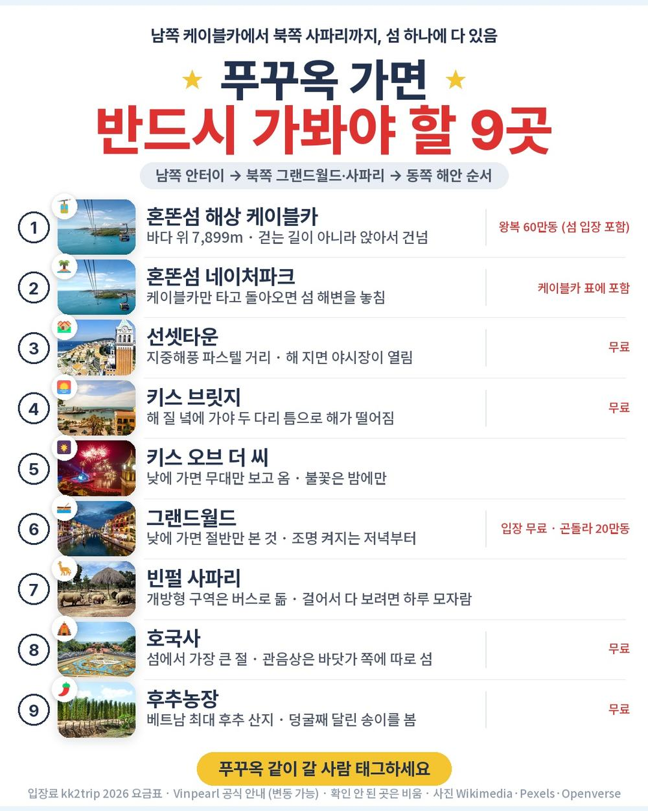
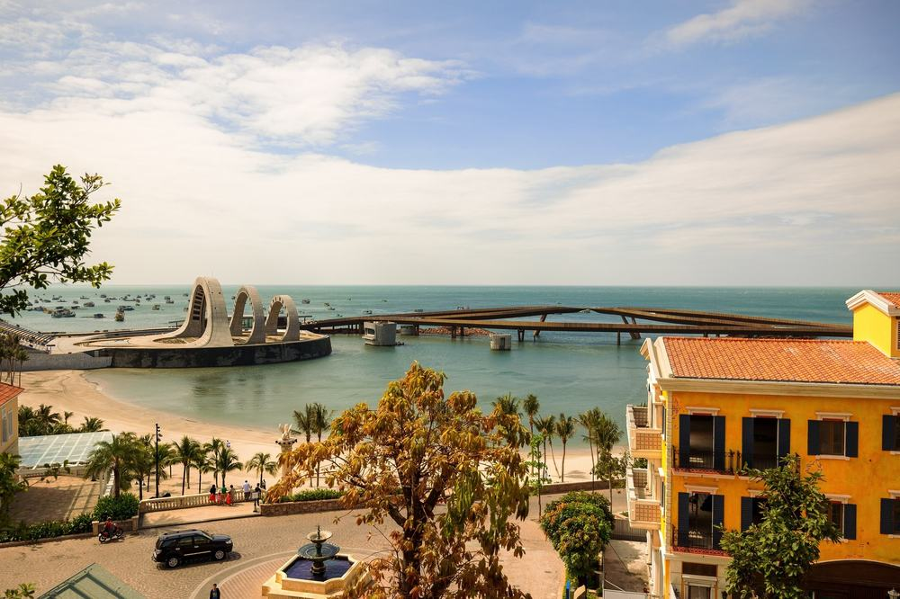
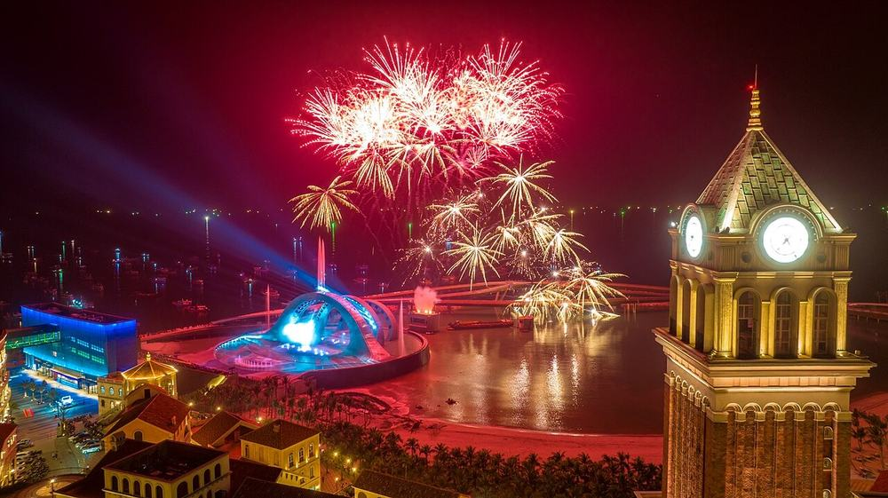
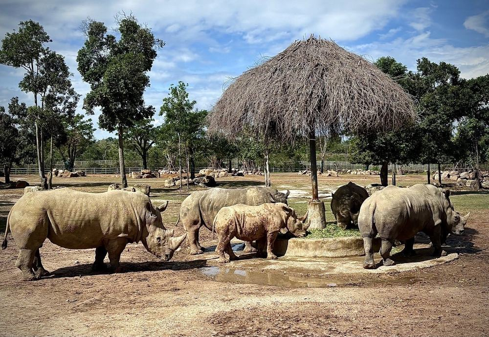
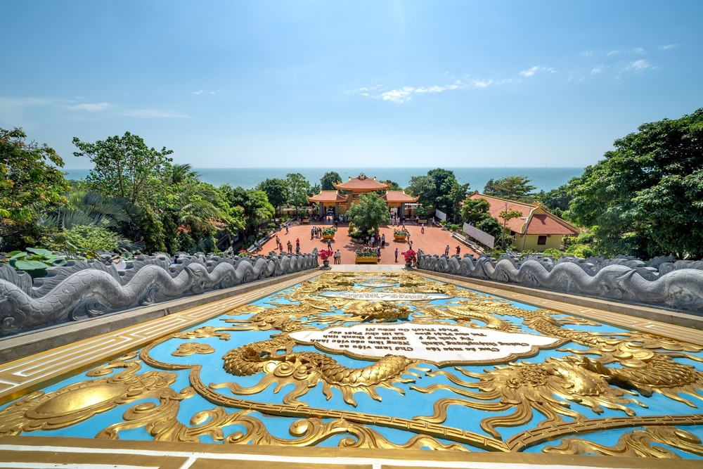
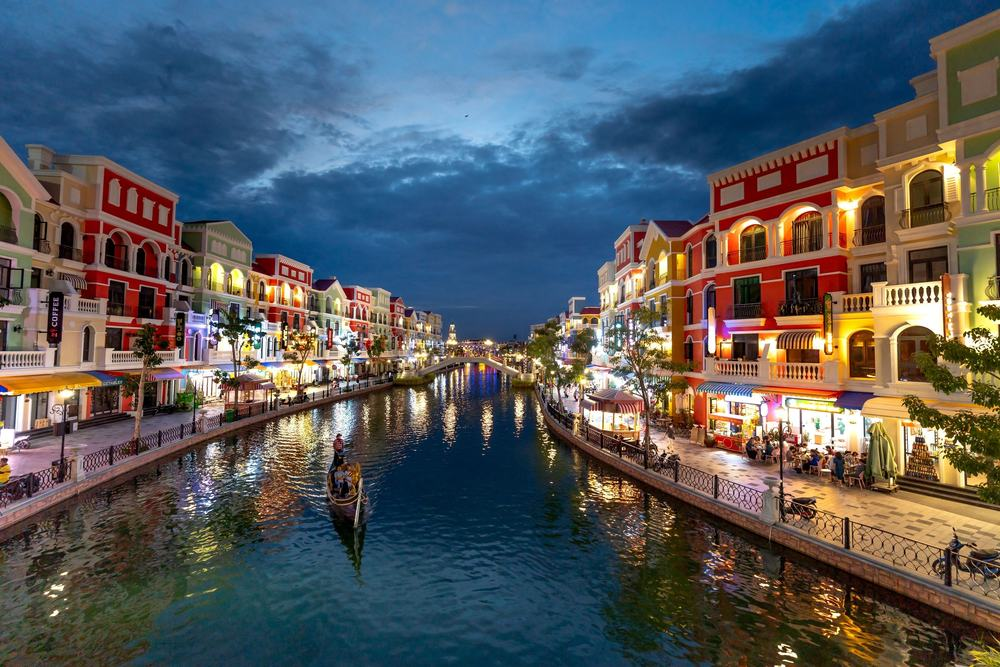

편한여행사 푸꾸옥 패키지 여행 103만원대, 노쇼핑에 마사지 3번 추가금 진짜 없을까?

가을에 따뜻한 바다로 짧게 다녀올 데를 찾다 보면 푸꾸옥이 자주 걸림. 인천에서 직항으로 다섯 시간 남짓이고, 섬 하나에 케이블카·사파리·야시장이 다 모여 있어서임.
그러다 편한여행사 상품이 눈에 띔. 쇼핑 0회, 선택관광 0, 마사지 90분이 하루 한 번씩 3회, 5성급 리조트 3박이 103만 9,358원임. 해상 케이블카, 빈펄 사파리, 키스 오브 더 씨 공연, 그랜드월드 나이트 투어까지 일정표에 들어 있음.
결론 — 추천. 쇼핑센터 없이 섬의 큰 볼거리를 다 돌고, 마사지 세 번으로 몸까지 푸는 구성임. 따로 내는 건 가이드 경비 50달러와 마사지 팁 정도. 다만 새벽 2시까지 인천공항에 가야 하는 출발이 힘든 분, 귀국 새벽 4시 도착이 힘든 분은 아님.
103만원대가 그만한 값인지, 직접 짜면 얼마인지 원문을 뜯어봤음.
| 항목 | 내용 |
|---|---|
| 가격 | 1인 1,039,358원 (2인 1실 기준 · 10월 출발) |
| 여행사 | 편한여행사 |
| 항공 | 비엣젯항공 직항 · 인천 새벽 출발 → 푸꾸옥 아침 도착 / 귀국은 밤 출발 → 인천 새벽 도착 |
| 숙소 | 5성급 베스트 웨스턴 프리미어 소나시(또는 동급) 3박 · 한 리조트에서 세 밤 |
| 일정 | 3박 5일 · 전용 차량 · 한국어 가이드 · 식사 9회 · 3일차 오전 자유시간 |
| 가는 곳 | 혼똔섬 해상 케이블카 · 키스 브릿지·선셋타운 · 키스 오브 더 씨 · 빈펄 사파리 · 그랜드월드 · 호국사 · 후추농장 · 즈엉동 야시장 |
▶ 내 출발일 오늘 기준 요금 확인 (제휴 링크 · 예약 시 수수료를 받으며 가격은 같습니다)
▶ 10월 8일 기준 푸꾸옥 패키지 최저 57만 8,900원부터 — 출발일별 값 한 화면에: 비교 페이지
| 순서 | 다루는 것 | 한 줄 결론 |
|---|---|---|
| 1 | 구성 뜯어보기 | 쇼핑·선택관광 0, 따로 내는 건 가이드 경비 50달러 + 마사지 팁 |
| 2 | 일정 살펴보기 | 2일차 케이블카~밤 공연, 3일차 사파리~그랜드월드가 꽉 참 |
| 3 | 자유여행 VS 패키지 | 직접 짜면 89만원 | 자유여행이 22만원쯤 덜 듦, 그 값으로 사는 게 있음 |
1. 구성 뜯어보기
요약 — 항공·5성급 3박·식사 9회·입장료·전용 차량·한국어 가이드·보험이 들어 있음. 쇼핑과 선택관광은 없고, 현지에서 더 내는 건 가이드 경비 1인 50달러와 마사지 팁임.
1-1. 103만원대에 들어 있는 것

포함 항목을 원문에서 그대로 옮기면 이럼.
- 왕복 항공권 + 유류할증료·공항세
- 5성급 리조트 3박 (2인 1실)
- 식사 9회 (호텔 조식 3 · 특식 4 · 한식 1 · 현지식 1)
- 관광지 입장료 · 전용 차량 · 한국어 가이드 · 여행자보험
- 아로마 핫스톤 마사지 90분 × 3회 · 소금커피/에그커피 서비스 · 웰컴 과일
관광은 이럼.
- 남쪽 — 혼똔섬 해상 케이블카(네이처파크·워터파크) · 키스 브릿지 · 선셋타운 야시장 · 키스 오브 더 씨 공연
- 북쪽 — 빈펄 사파리 · 그랜드월드 나이트 투어(분수쇼 + 버기카)
- 동쪽 — 호국사 · 위즐커피 체험 · 진주박물관 · 후추농장
- 마지막 밤 — 즈엉동 야시장
이 상품의 차별점은 쇼핑센터를 한 곳도 안 들르고, 그 시간에 마사지를 세 번 받는다는 것임. 같은 섬 상품 중엔 쇼핑 2~3회가 들어간 구성이 흔한데, 이건 그 칸이 비어 있음.
출발일별 요금 확인하기
https://naver.me/G7NOYDNe
1-2. 마사지 세 번, 식사 아홉 번

마사지는 2·3·4일차에 하루 한 번, 90분씩임. 팁은 별도이고, 원문에 매너팁은 자율이라 "지불 여부에 따른 불이익은 없음"이라고 적혀 있음.
식사는 9회. 첫날 점심 쌀국수, 2일차 점심 망고뷔페와 저녁 한식, 3일차 저녁 특식, 4일차 점심 반세오와 저녁 바다 전망 식당. 각자 드시는 건 1일차 저녁과 3일차 점심 두 끼뿐임.
1-3. 호텔

호텔은 베스트 웨스턴 프리미어 소나시, 5성급임. 사정에 따라 동급으로 바뀔 수 있음. 섬 서쪽 소나시 신도시에 있어 한적하고, 상품이 내세우는 건 인피니티 풀임. 세 밤을 한 곳에서 자서 짐은 한 번만 풀면 됨. 혼자 쓰면 3박에 21만원이 더 붙음.
1-4. 현장에서 더 낼 돈
| 항목 | 금액 | 비고 |
|---|---|---|
| 가이드·기사 경비 | 약 140,000원 | 1인 50달러 × 2 (현지 지불) |
| 자유식 2끼 | 약 60,000원 | 1일차 저녁·3일차 점심, 2인 추정 |
| 마사지 팁 | 약 40,000원 | 3회 · 2인 추정 (자율) |
| 쇼핑·선택관광 | 0원 | 둘 다 없음 |
| 합계 (2인) | 약 240,000원 | 상품가 207만 8,716원 + 24만원 = 약 232만원 |
한 사람으로 치면 약 116만원임. 환율은 1달러 약 1,400원으로 잡았음.
1절 자주 나오는 질문
Q. 정말 쇼핑이 없나요?
A. 없음. 원문 쇼핑 항목이 '불포함(0회)'이고, 선택관광 목록도 없음.
Q. 가이드 경비는 따로 내나요?
A. 냄. 1인 50달러를 현지에서 지불함. 상품가 밖임.
Q. 마사지 팁은 얼마나 줘야 하나요?
A. 원문 기준 매너팁은 자율이고, 안 낸다고 불이익은 없다고 적혀 있음. 위 표는 넉넉히 잡은 값임.
2. 일정 살펴보기
요약 — 1일차 새벽 비행기로 와서 쉬는 날, 2일차 케이블카·마사지·선셋타운·밤 공연, 3일차 오전 자유시간 뒤 사파리·마사지·그랜드월드, 4일차 호국사·후추농장·마사지·야시장 뒤 밤 비행기, 5일차 새벽 인천 도착.
2-1. 하루하루 어디를 가나

| 일차 | 가는 곳 | 식사 | 숙소 |
|---|---|---|---|
| DAY 1 | 인천 05:00 출발 → 푸꾸옥 08:25 도착 → 쌀국수 점심 → 리조트 체크인 · 휴식 | 중 쌀국수 · 석 자유식 | 소나시 |
| DAY 2 | 해상 케이블카 · 혼똔섬 → 망고뷔페 → 핫스톤 마사지 90분 → 키스 브릿지 → 노을 저녁 → 선셋타운 야시장 → 키스 오브 더 씨 | 조 호텔식 · 중 망고뷔페 · 석 한식 | 소나시 |
| DAY 3 | 오전 자유시간 → 빈펄 사파리 → 마사지 90분 → 소금커피 → 그랜드월드 나이트 투어 | 조 호텔식 · 중 자유식 · 석 특식 | 소나시 |
| DAY 4 | 체크아웃 → 호국사 · 위즐커피 체험 · 진주박물관 · 후추농장 → 반세오 점심 → 마사지 90분 → 뷰 맛집 저녁 → 즈엉동 야시장 → 공항 | 조 호텔식 · 중 반세오 · 석 뷰 맛집 | 기내 |
| DAY 5 | 푸꾸옥 20:45 출발 → 인천 04:00 도착 | — | — |
| 일차 | 버스 이동 | 걷기 | 포함 식사 |
|---|---|---|---|
| DAY 1 | 약 0.6시간 | 적음 | 중 특별식 (석 자유식) |
| DAY 2 | 약 1.5시간 | 보통 | 조 호텔식 · 중 특별식 · 석 한식 |
| DAY 3 | 약 1.5시간 | 보통 | 조 호텔식 · 석 특별식 (중 자유식) |
| DAY 4 | 약 1.5시간 | 적음 | 조 호텔식 · 중 현지식 · 석 특별식 |
| DAY 5 | 거의 없음 | 적음 | 포함 끼니 없음 |
| 합계 | 약 5.1시간 | - | 9끼 (특별식 4 · 호텔식 3 · 한식 1 · 현지식 1) + 자유식 2 |
요약 — 버스 이동은 5일 동안 약 5.1시간, 포함 식사는 9끼임. 가장 많이 걷는 날은 DAY 2임.
2-2. 2일차 — 바다 위 케이블카에서 밤 공연까지

아침에 해상 케이블카로 혼똔섬에 건너감. 길이 7,899m로 바다 위 케이블카로는 세계에서 가장 긺. 섬 안 네이처파크엔 워터파크·놀이기구·전용 해변이 들어 있음. 점심 망고뷔페 뒤 첫 번째 핫스톤 마사지, 그다음 선셋타운에서 키스 브릿지 너머로 해 지는 걸 보며 저녁을 먹음. 밤엔 키스 오브 더 씨 공연.
키스 오브 더 씨는 낮에 가면 빈 무대만 보고 옴 — 이 상품은 밤 공연이라 불꽃까지 봄.
2-3. 3일차 — 오전은 리조트, 오후는 사파리와 그랜드월드

오전은 자유시간이라 리조트 수영장이나 해변에서 쉼. 점심은 각자 먹고 섬 북쪽 빈펄 사파리로 감. 동물 150여 종, 개방형 구역은 버스에 앉아서 지나감. 사파리 뒤 두 번째 마사지와 소금커피 한 잔, 밤엔 베네치아를 본뜬 그랜드월드를 버기카로 돌고 분수쇼를 봄.
2-4. 4일차 — 동쪽 해안, 그리고 밤 비행기

체크아웃 뒤 호국사, 위즐커피 체험, 진주박물관, 후추농장을 돌고 점심은 반세오. 오후 세 번째 마사지 뒤 바다 전망 식당에서 저녁, 마지막으로 즈엉동 야시장을 걷고 공항으로 감. 20:45 비행기로 인천 04:00 도착임. 이날은 호텔이 없음.
출발은 새벽 5시 비행기라 새벽 2시까지 인천공항에 가야 함. 공항 근처에서 전날 묵거나, 공항 가는 차편을 미리 정해 두는 게 편함.
2절 자주 나오는 질문
Q. 많이 걷나요?
A. 케이블카·사파리 버스·버기카로 움직이는 구간이 많음. 가장 많이 걷는 날은 2일차 선셋타운과 야시장임. 호국사는 계단 구간이 있음.
Q. 비행기는 몇 시인가요?
A. 비엣젯항공 직항이고, 인천 05:00 출발 → 푸꾸옥 08:25 도착, 귀국은 푸꾸옥 20:45 출발 → 인천 04:00 도착임(원문 기준).
Q. 자유시간이 있나요?
A. 3일차 오전 반나절이 자유일정임. 1일차 오후도 체크인 뒤엔 사실상 쉬는 시간임.
3. 자유여행 VS 패키지 | 직접 짜면 89만원
요약 — 같은 일정을 직접 짜면 1인 89만원쯤 듦. 패키지는 가이드 경비를 더해 약 111만원이라 22만원쯤 더 들지만, 그 차이로 새벽 공항 픽업·섬 남북 이동·마사지 세 번 예약·한국어 가이드를 삼.
3-1. 같은 일정을 직접 짜면

같은 일정을 혼자 짠다고 치고 항목별로 계산해 봄. 2인 1실 1인분임. 항공 말고는 추정치라 근거 열에 적어 둠. 항공은 일부러 앞으로 두 달 중 가장 싼 값을 넣었음(같은 날짜 값이 튀어서) — 자유여행에 유리하게 잡은 셈임.
| 항목 | 금액 | 근거 |
|---|---|---|
| 인천–푸꾸옥 왕복 항공 | 294,000원 | 앞으로 두 달 직항 최저 운임 (2026-10-08 마이리얼트립 조회 · 같은 날짜 값은 튐) |
| 5성급 리조트 3박 | 180,000원 | 2인 1실 1박 약 12만원의 1인분 × 3 (추정) |
| 케이블카·사파리·공연 | 110,000원 | 케이블카 왕복 60만동 + 사파리·공연 입장 (추정) |
| 마사지 90분 3회 | 120,000원 | 1회 약 4만원 (추정) |
| 식사 9회 | 90,000원 | 조식 3·점심 3·저녁 3 (추정) |
| 공항↔호텔·섬 안 이동 | 80,000원 | 새벽 공항 이동 + 남쪽 케이블카·북쪽 사파리 오가는 차, 2인 나눔 (추정) |
| 여행자보험 | 15,000원 | 5일 기준 |
| 가이드 | — | 자유여행은 없음 |
| 합계 | 약 889,000원 |
직접 짜실 분은 이 날짜 항공권부터 보세요 — https://myrealt.rip/uYlt0a (마이리얼트립 제휴 링크)
패키지는 1,039,358원에 가이드 경비 50달러(약 7만원)를 더해 약 111만원임.
3-2. 그래서 22만원으로 뭘 사나
숫자만 보면 자유여행이 22만원쯤 덜 듦. 대신 이 일정을 혼자 이으려면 손이 많이 감.
- 새벽 2시 인천공항, 아침 8시 25분 푸꾸옥 도착 — 내리자마자 차를 직접 잡아야 함
- 케이블카는 섬 남쪽 끝, 사파리·그랜드월드는 북쪽 끝 — 섬을 위아래로 오가는 차를 매번 불러야 함
- 마사지 세 번, 공연·사파리 표를 날짜 맞춰 따로 예약해야 함
패키지는 이 전부가 전용 차량과 한국어 가이드로 붙음. 자유여행 계산표에 가이드 행이 비어 있는 게 그 뜻임 — 0원이 아니라 살 수 없는 것임.
3-3. 어느 쪽이 맞나
| 자유여행이 맞음 | 패키지가 맞음 |
|---|---|
| 그랩 부르기·예약이 익숙함 | 이동·예약을 다 맡기고 싶음 |
| 비행기 시간을 낮으로 고르고 싶음 | 새벽 비행기도 괜찮음 |
| 마사지·공연을 골라 넣고 싶음 | 마사지 세 번이 들어 있어서 좋음 |
| 1원이라도 아끼는 게 먼저임 | 쇼핑 없이 편하게 도는 게 먼저임 |
3절 자주 나오는 질문
Q. 자유여행이 더 싸지 않나요?
A. 계산해 보면 자유여행이 약 89만원, 패키지가 가이드 경비를 더해 약 111만원임. 항공을 가장 싼 날 값으로 넣어서 나온 차이이고, 그 22만원 안에 새벽 공항 이동·섬 남북 이동·예약·가이드가 들어 있음.
Q. 출발확정인가요?
A. 원문 기준 출발확정 상품이 아님. 예약하면 오는 확인 연락에서 출발 여부를 물어보면 됨.
Q. 시차가 있나요?
A. 베트남은 한국보다 2시간 늦음. 한국 9시가 현지 7시임.
마무리
정리하면 이럼.
추천함. 103만 9,358원에 인천 직항, 5성급 리조트 3박, 식사 9회, 해상 케이블카와 혼똔섬, 키스 브릿지와 키스 오브 더 씨, 빈펄 사파리, 그랜드월드, 호국사와 후추농장, 즈엉동 야시장이 들어 있고, 마사지 90분이 세 번임. 쇼핑과 선택관광은 없음.
이런 분은 고르면 안 됨. 새벽 2시까지 인천공항에 가는 게 힘든 분, 귀국 새벽 4시 도착이 힘든 분, 쇼핑이 있어도 값이 먼저인 분.
걸리는 점이 있긴 한데 상품 흠이라기보다 맞는 사람과 안 맞는 사람을 가르는 조건에 가까움.
오늘 기준 출발일별 요금 보기
https://naver.me/G7NOYDNe
같은 목적지 다른 여행사 패키지, 쇼핑·선택관광·가이드 경비까지 비교
https://pkg-lab.com/search/?q=%ED%91%B8%EA%BE%B8%EC%98%A5&utm_source=blog&utm_medium=post&utm_campaign=daily
함께 보면 좋은 글
하나투어 홍콩 마카오 패키지 여행 79만 9,900원, 피크트램에 베네시안까지 현지에서 더 내는 돈은 얼마일까?
https://blog.naver.com/robotnady10/224433684812
노랑풍선 다낭 패키지 여행 62만 9천원, 바나힐에 호이안 야경까지 추가금 진짜 없을까?
https://blog.naver.com/robotnady10/224432532351
이 글에는 네이버·마이리얼트립 제휴 링크가 포함되어 있으며, 링크를 통해 예약하시면 일정 수수료를 받습니다. 가격은 동일합니다. 가격과 구성은 2026년 10월 8일 확인 기준이며 출발일에 따라 달라질 수 있습니다.
▶ 이 상품, 영상으로 보기 (유튜브)
▶ 푸꾸옥 패키지 오늘 값 나란히 비교
▶ 같은 목적지 다른 여행사 패키지, 쇼핑·선택관광·가이드 경비까지 비교: pkg-lab.com
사진 출처 (저작자 · 라이선스):
Kiss Bridge, Phu Quoc (52681182204) — CC BY-SA 2.0 (Wikimedia Commons) 원본
.jpg){kind=link}
Vivu Vietnam — CC BY-SA 4.0 (Wikimedia Commons) 원본

그 밖의 사진: Pexels · Wikimedia Commons
쇼츠·클립 영상과 사진:
Самая длинная канатная дорога над морем в мире.The — Hi People! (YouTube, CC BY) 원본
⛵ Leaving Phu Quoc by Boat — Sunset Town, Kiss Bri — Where Can I FLY (YouTube, CC BY) 원본
CHùa Hộ Quốc - Thiền Viện Trúc Lâm Phú Quốc — QHMode - Những câu chuyện thời trang (YouTube, CC BY) 원본
Pixabay 원본
Kiss Bridge at sunset Phu Quoc Island Vietnam — CC BY-SA 4.0 (Wikimedia Commons) 원본

Phương Huy — CC BY-SA 4.0 (Wikimedia Commons) 원본
_(3).jpg){kind=link}
Phương Huy — CC BY-SA 4.0 (Wikimedia Commons) 원본
_(6).jpg){kind=link}
Chùa Hộ Quốc ở đảo Phú Quốc, sống ảo tung chảo, tháng 3 năm — CC BY-SA 4.0 (Wikimedia Commons) 원본
.jpg){kind=link}